Engineering Portfolio
A curated showcase of recent full-stack production platforms, graphics engines, and Berkeley systems architecture projects.
Recent Production & Game Projects
4 ProjectsEquityPulse — Personal Wealth Operating System
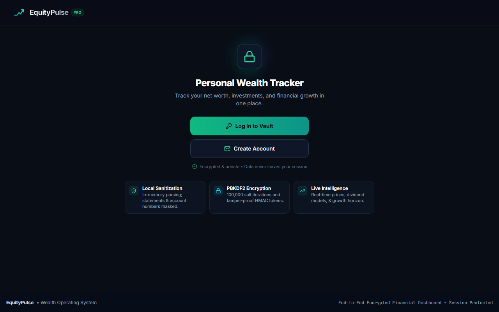
Production Dashboard & Private Ledger Interface
EquityPulse is a privacy-first wealth operating system and portfolio tracking platform designed to give individuals complete visibility into their net worth, multi-asset investments, and dividend projections without sacrificing their financial data privacy. Built with client-side zero-knowledge architecture, financial records and telemetry are sanitized and encrypted before ever persisting.
Traditional net worth apps require handing over banking credentials and plaintext financials to third parties. EquityPulse was created as a zero-knowledge personal finance engine where the client is completely in control of their private ledger:
- Zero-Knowledge Cryptographic Vault: Uses client-side PBKDF2 key derivation with 100,000 salt iterations and tamper-proof HMAC tokens, ensuring financial numbers never leave the user's session unencrypted.
- Local In-Memory Sanitization: Financial statement upload parser runs in-memory to automatically mask account numbers and personally identifiable information (PII) before deriving transactions and holdings.
- Live Financial Intelligence: Real-time price tracking, automated dividend yield modeling, asset allocation breakdowns, and long-term net worth forecast simulations.
- Session Isolation & Security: Strict session boundary enforcement preventing leakage or cross-session tracking.
Live Platform: equitypulse.pro
Armenia Real Estate Hub — Multi-Platform Property Aggregator
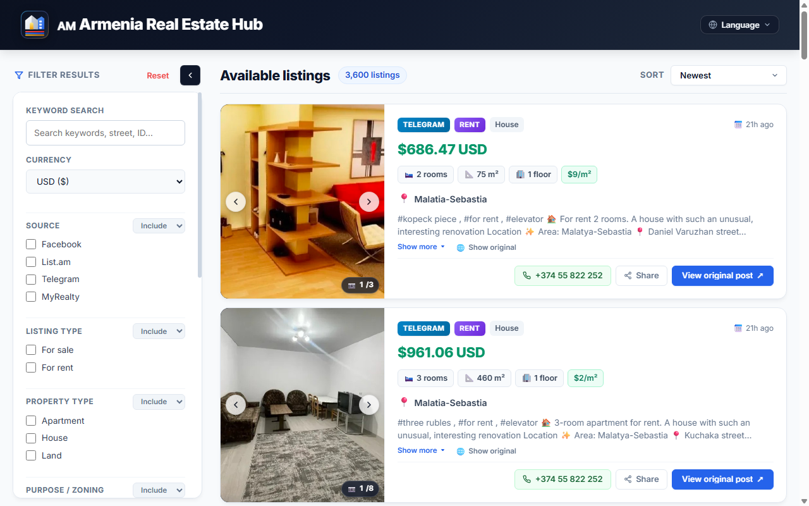
Centralized Property Portal with Normalized FX & Pricing
I built Armenia Real Estate Hub out of personal necessity. Searching for homes in Armenia was notoriously fragmented across scattered channels—Telegram groups, List.am, Facebook groups, and broker pages. Because my wife is Armenian and we regularly search for homes in Armenia, I built a unified real estate discovery platform that aggregates over 3,600+ listings into a centralized, searchable interface with localized currency exchange and price per m² metrics.
Finding housing in Armenia traditionally meant monitoring dozens of separate Telegram channels, scrolling through unindexed Facebook groups, and translating disparate formats with varying currencies (AMD, USD, RUB). Armenia Real Estate Hub bridges this gap with an automated ingestion and aggregation engine:
- Multi-Channel Ingestion Pipeline: Continuous ingestion pipelines monitoring Telegram channels, List.am, Facebook groups, and MyRealty, deduplicating repetitive listings and parsing raw text into structured attributes.
- Dynamic Currency & Metric Normalization: Live exchange rate engine converting between AMD (֏), USD ($), and Rubles (₽), calculating standard price per square meter ($/m²) for objective comparison.
- District-Level & Property Filtering: Granular filtering across Yerevan districts (Kentron, Arabkir, Malatia-Sebastia, etc.) by room count, square footage, building floor, and zoning (residential vs. commercial).
- Direct Landlord / Broker Reach: Direct one-click WhatsApp and Telegram action buttons linked to the original verified source post.
Live Website: armeniarealestatehub.homes
HouseHunter — Collaborative Bay Area Home & Commute Analytics
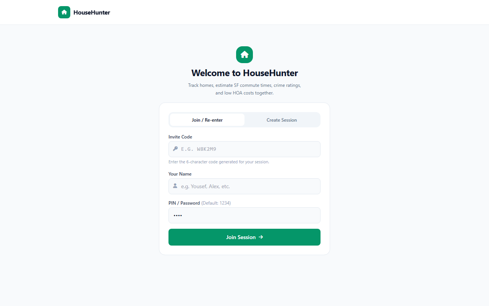
Commute-Factored Home Evaluation & Multiplayer Sessions
Hunting for homes in San Francisco and the Bay Area with my wife proved how tricky it is to balance list price against real-world factors: peak-hour commute times into the city, neighborhood crime ratings, and hidden HOA fees. I created HouseHunter as a collaborative property decision engine built for couples and families to evaluate, compare, and bookmark homes together.
Traditional real estate portals focus strictly on bed/bath numbers and list prices, ignoring the daily realities of living in the Bay Area. HouseHunter puts commute logistics, neighborhood safety, and total cost of ownership at the forefront:
- Multiplayer Collaborative Sessions: Lightweight shared 6-character room codes and PIN access allowing partners to synchronously rate, comment, and prioritize prospective homes together.
- SF Transit & Commute Calculation: Real-time commute estimations factoring in traffic conditions, BART / Caltrain proximity, and travel duration into San Francisco hubs.
- Neighborhood Safety & Crime Profiling: Integrates localized safety and crime rate metrics to evaluate street and neighborhood quality.
- True Cost of Ownership Analysis: Computes true monthly expenditure by compounding list price, mortgage interest, property tax rates, and monthly HOA fees.
Live App: housesearcher-bayarea.fly.dev
Voidfall: Dredge — 3D Voxel Action Game & Custom Engine
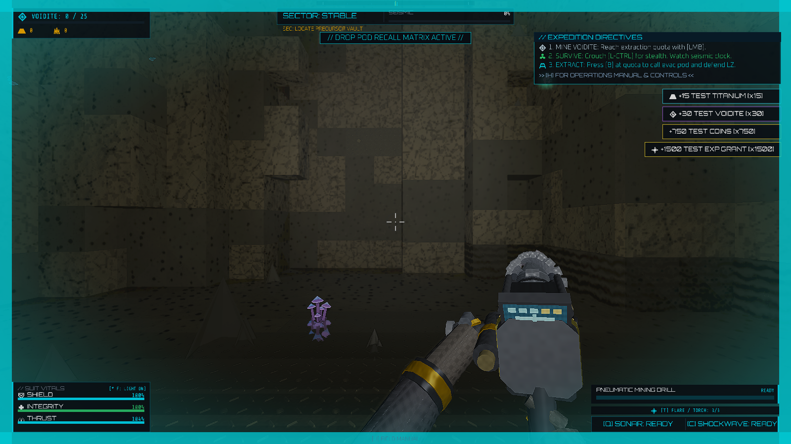
Subterranean Extraction & Dynamic Voxel Volumetrics
I've always had an interest in game development and graphics programming, which led me to build Voidfall: Dredge. It is a high-performance subterranean sci-fi voxel action game and custom engine built from scratch in modern C++20 and OpenGL 4.5 Core Profile. Delvers descend into volatile planetary depths to extract Voidite crystals, breach sealed precursor vaults, survive radiation tremors, and defend extraction beacons.
Built entirely from scratch without commercial engines, Voidfall: Dredge bridges low-level memory-packed voxel architectures with modern graphics pipelines and client-server multiplayer synchronization:
- High-Density Voxel Memory Architecture: 32x32x32 chunk hierarchies with 16-bit packed voxel memory layout (
uint8_t material_id,uint8_t flags_and_damage). Bit-packed 8-byte vertex formatting with greedy meshing and ambient occlusion. - Procedural Cavern & World Generation: Multi-octave 3D Simplex noise generating deep subterranean cavern networks, radioactive hazard zones, volcanic fissures, and sealed industrial vaults.
- Dynamic Physics & Voxel Destruction: AABB sweep collision detection with raycasted pneumatic drill destruction, real-time debris physics, and tactical flare illumination.
- Atmospheric Subterranean Rendering: Volumetric distance fog, dynamic point light attenuation, glowing crystal shaders, and tactical radar sonar scanner effects.
- Full Game Loop & Audio DSP: Comprehensive mission cycle (Drop Pod → Mining Extraction → Defense → Debrief) with custom audio safety limiters and positional stereo sound.
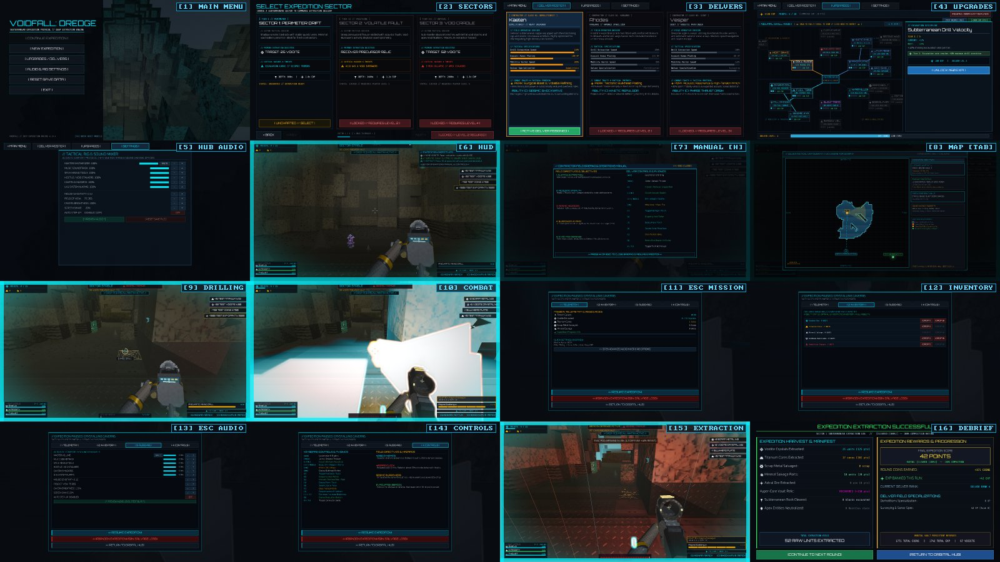
Voidfall: Dredge — Complete 16-Phase Game Engine Pipeline & Systems Montage
Source Code: github.com/yalshinnawi/voxel_3d_voidfall_dredge
Systems, Hardware & Robotics
5 ProjectsSecure File System — Cryptographic Zero-Trust Storage
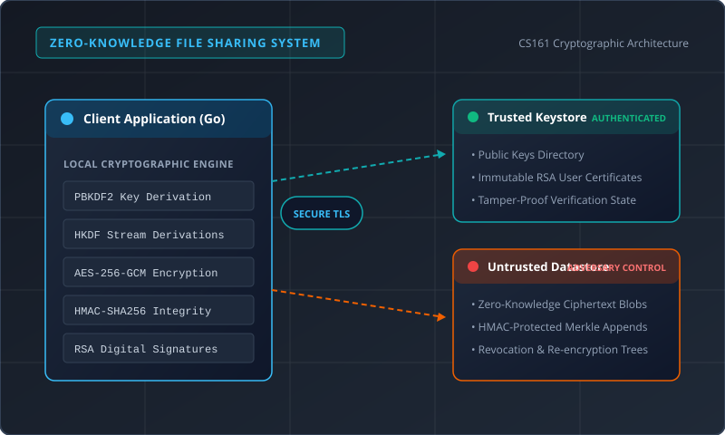
Cryptographic Client, Keystore, & Untrusted Datastore Model
Designed and implemented a client application for a secure, zero-trust cloud file sharing system in Golang. Engineered with end-to-end cryptographic integrity so that an untrusted server cannot view, decrypt, or maliciously tamper with user data even under active adversary and Man-in-the-Middle (MitM) conditions.
The architecture is divided into four major components: the trusted Keystore, untrusted Datastore, malicious users, and user communication channels:
- Trusted Keystore: An authenticated directory service storing immutable public keys and user verification records that adversaries cannot tamper with.
- Untrusted Datastore: Hostile cloud storage where an adversary observes all API traffic (set/get/delete). All persisted content is encrypted using AES-GCM and verified with HMAC to detect any bit-flip or replay attacks.
- MitM-Resistant File Sharing: When sharing files, an encrypted access token is sent over insecure communication channels, using digital signatures and public-key encryption to guarantee recipient validation.
- Efficient Revocation & Append: Re-encrypts file nodes and updates access trees upon revocation (RevokeFile) without downloading the entire dataset, maintaining efficient
AppendFilethroughput.
Specification: UC Berkeley CS161 Computer Security Project 2
3-Stage Pipelined RISC-V CPU on FPGA

Complete CPU Datapath & Memory Mapped IO Organization
Designed and synthesized a 3-stage pipelined RISC-V RV32 processor in Verilog targeted for a Xilinx Zynq 7000-series FPGA. Features on-chip Memory-Mapped I/O (MMIO), a full UART transceiver, BIOS execution, subtractive audio synthesizer, and custom peripheral interfaces.
The processor pipeline separates execution into Instruction Fetch (IF), Instruction Decode & Execute (IDEX), and Memory Write Back (MEMWB):
IF Stage

IDEX Stage

MEMWB Stage

- Clock Frequency & Critical Path: Achieved a synthesis clock speed of ~70MHz on the Zynq-7000 FPGA. Optimized critical path delays between IDEX multiplication stages and audio PWM buffers.
- Forwarding & Hazard Mitigation: Implemented data forwarding logic between MEMWB and IDEX stages, maintaining an impressive CPI of ~1.18 on standard matrix multiplication (
mmult) benchmarks. - FPGA Resource Footprint: Efficiently synthesized with only 2,283 Slice LUTs and 905 Slice Registers.
Yoga Pose Correction & Motion Planning with Baxter
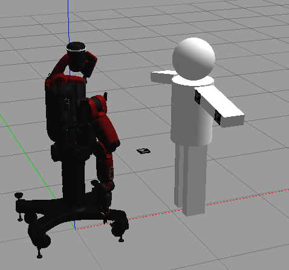
Baxter Robot with HumanBot Simulation Model
Autonomous robotic assistance platform utilizing a 7-DOF Rethink Robotics Baxter robot to visually identify incorrect posture and physically guide a human mannequin's arms into proper yoga alignment. Developed in ROS, Python, OpenCV, and Gazebo.
To enable contact-based physical adjustment, the pipeline unites monocular 3D pose estimation, kinematic transforms, and MoveIt trajectory planning:
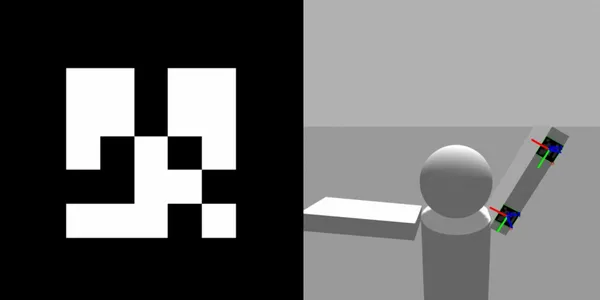
ArUco Tag Detection via Baxter Head Camera
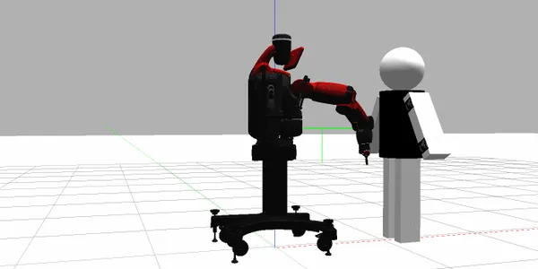
MoveIt Collision-Free Arm Trajectory Execution
- Monocular 3D Tag Localization: Detects fiducial ArUco markers on the user's limbs from Baxter's head camera and projects them into the global coordinate frame using TF transformation buffers.
- URDF Human Model: Designed a dynamic
urdf.xacromodel of the human upper torso with realistic rotational limits and resistance parameters. - Collision-Free Trajectory Planning: Employs MoveIt's sampling-based planners to avoid self-collision and calculate smooth joint velocities when repositioning arms into a T-pose.
Gazebo & RViz Demonstration: Monocular Detection to T-Pose Re-orientation
Gitlet — Version Control System from Scratch
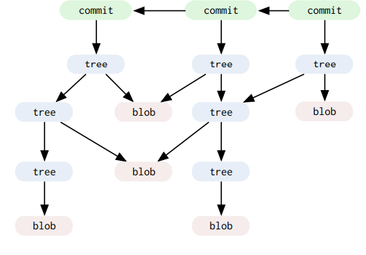
Directed Acyclic Graph (DAG) Commit Architecture
A complete local version-control system modeled after Git, written from scratch in Java. Supports full commit history logs, staging and untracking files, branch creation and deletion, commit checkouts, arbitrary resets, and three-way branch merges with automated conflict resolution.
Gitlet mirrors Git's underlying content-addressable storage model using three primary primitives:
- Blobs: Raw file contents identified uniquely by their SHA-1 checksum.
- Trees & Commits: Immutable snapshots combining timestamp, author, commit message, parent commit pointers, and mapped blob references.
- Branch & Merge Engine: Implements Lowest Common Ancestor (LCA) graph traversals to determine merge bases for three-way branch merges and automatically generate conflict markers.
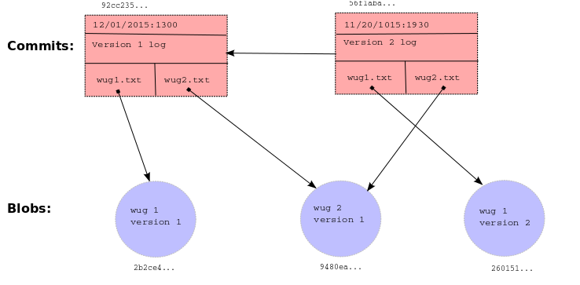
Content-Addressable Object Storage Architecture (CS61B)
NumC — SIMD & OpenMP Accelerated Linear Algebra
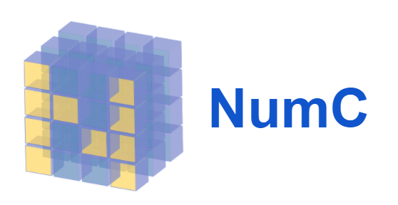
C-Optimized Matrix Accelerator & Python Bindings
A high-speed linear algebra library written in C with a native Python C-API bridge. Implements multidimensional matrix operations, sub-matrix slicing with memory preservation, and extreme speed optimizations utilizing Intel AVX Vector Intrinsics (SIMD), OpenMP multi-threading, loop unrolling, and cache-blocking algorithms.
Achieving performance comparable to NumPy required low-level hardware optimization and cache line alignment:
- Intel AVX Vectorization: Replaced naive inner loops with 256-bit SIMD registers, loading 4 double-precision floats per vector operation.
- Spatial Locality & Cache Blocking: Transposed target matrices to ensure sequential memory access across cache lines, preventing cache misses.
- OpenMP Parallel Loops: Parallelized the outer loops across CPU cores while unrolling inner loops to maximize instruction pipeline saturation, achieving a total 98x speedup over the naive baseline.
- Logarithmic Exponentiation: Optimized matrix power operations using \(O(\log n)\) divide-and-conquer exponentiation with reusable buffer allocation.